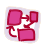

Now you are in the beginning of your mission. Here you can see the description of a challenge you are facing in this mission. Please, read it carefully in order to know what this mission is about and what do you have to do next. Look also through the learning object named “Welcome to SCY-lab” in order to familiarize yourself with the learning environment.
| When you have finished, open the mission map and move next to the Concept map space in order to make your initial concept map. |  |
| Then look through the task for making video report and decide when to complete it (click in the misson map on the Video report icon). | |
| After that you should select first inquiry cycle (click in the misson map on the Hypotheses icon). |
Good luck to you on this adventure!
|
Learning goals After a successful mission accomplishment, you are able to act as a researcher and:
|